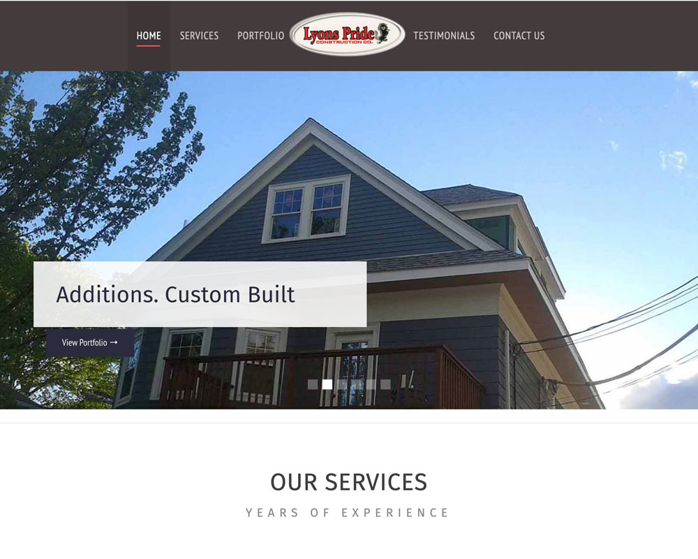

Custom web design, WordPress development, and local SEO for small businesses in Malden and the Greater Boston area. Affordable freelance pricing — no agency overhead. Flat-rate quotes, no surprises.
Based in Everett — just minutes from Malden — we bring Boston-quality web design to Malden businesses without the big-agency price tag. We work with restaurants, contractors, retailers, healthcare providers, and professional service firms throughout Malden and the Mystic River corridor.
Mobile-friendly, fast-loading websites built to reflect your brand and convert visitors into customers. We design from scratch or redesign your existing site — no cookie-cutter templates.
Learn moreCustom themes, plugin development, WooCommerce stores, and WordPress troubleshooting. We build WordPress sites that are easy for you to update and built for long-term reliability.
Learn moreGet found when Malden residents search for your services. We optimize your Google Business Profile, local citations, and on-page content to rank higher in Google Maps and organic results.
Learn moreWooCommerce and Shopify stores built for Malden-area businesses ready to sell online. We handle product pages, payment integration, shipping setup, and performance optimization.
Monthly maintenance plans to keep your site secure, updated, and running fast. Includes core and plugin updates, backups, security scanning, and performance monitoring.
Learn moreLogo design, business cards, menus, and branding materials for Malden small businesses. Consistent visual identity across your website and print materials builds trust and recognition.
Learn moreMalden is one of Greater Boston's most diverse and growing business communities — with a strong concentration of restaurants, auto shops, professional services, and retail along Commercial Street and Pleasant Street. We've been designing websites for businesses like yours since 2005, and we understand what it takes to compete in the local market.
As a freelance studio based in Everett (neighboring Malden), we offer agency-quality results at freelance pricing. No long-term contracts, no hidden fees, and a direct line to the person doing the work.

Common questions from Malden small business owners before starting a web design project.
Based in Everett, MA — serving Malden, Medford, Somerville, Chelsea, Revere, Lynn, Saugus, Waltham, Newton, and all of Greater Boston.
Tell us about your business and we'll send a free quote. No pressure, no obligation — just straight answers about what your website needs.